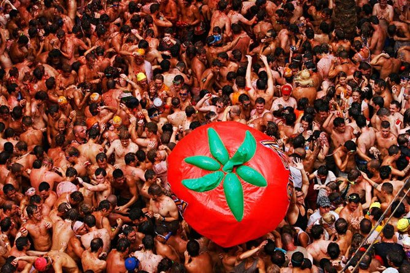
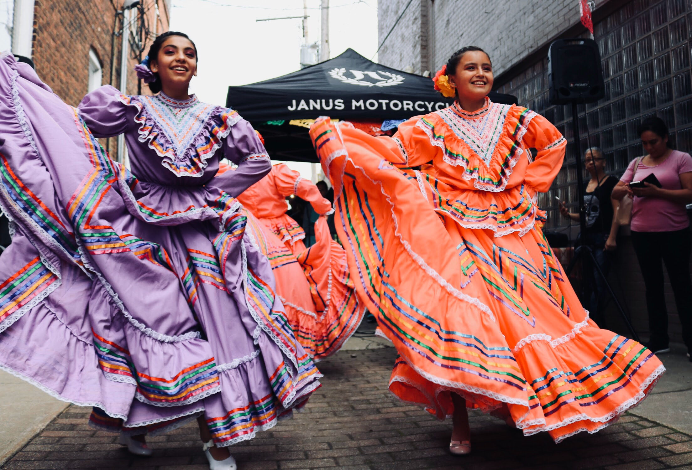

10 Top Things To Do In Spain In 2022 That Will Leave Your Soul Craving For More!
While we already had our growing fondness for the beautiful places in Europe, thanks to the popular Bollywood movie – Zindagi Na Milegi Dobara for helping us see Spain like never before, and making us fall in love with it too. It wouldn’t be wrong to say that if the country is on our bucket list today, it is majorly because of the top things to do in Spain. From thrilling adventure sports to spectacular places, there is an endless number of experiences here.
So, before you get down to plan your Europe holiday, have a look at these top experiences in Spain, which you ought to have at least once in your life!
I have carved a list of top 15 best activities that you can opt for while planning a vacation to Spain. Want to know what are they then keep reading.
1. Barcelona – Witness Antoni Gaudi’s Artwork
2. Bunol – Attend The La Tomatina
3. Camp Nou Stadium – Watch A Live Match
4. Seville – Savor The Best Served Tapas
5. Madrid – Watch The Popular Flamenco Show
Barcelona – Witness Antoni Gaudi’s Artwork

Park Guell, La Sagrada Familia, and Casa Batllo are few of the most beautiful artworks of Antoni Gaudi, and visiting these in Barcelona is amongst the top things to do in Spain. Everything from the splendour of the architecture to the intricate details is so inspiring that it’s difficult to take one’s eyes off it.
Best Gaudi buildings in Barcelona:Park Guell, La Sagrada Familia, Colonia Güell, and more.
Bunol – Attend The La Tomatina

Of all the things to do in Spain, the most popular is attending La Tomatina – the greatest festival in the world. Celebrated every year in Bunol, the party starts with a feast on Paella followed by thousands of people on the streets ready with squashed tomatoes in their hands, and excitement in their eyes.
When: Last Wednesday of August (every year)
Camp Nou Stadium – Watch A Live Match

While you’re in Barcelona already admiring the work of Gaudi, make sure you also visit the famous football stadium here. Irrespective of whether you’re a fan or not, the beauty of the stadium is awe-inspiring and watching a match here is definitely one of the best things to do in Barcelona, Spain.
Location: C. d’Aristides Maillol, 12, 08028 Barcelona, Spain
Seville – Savor The Best Served Tapas

Tapas is the staple food enjoyed with drinks in Spain, and the way different kinds of food are concocted and presented together in the bars make it a must-have in the country. While you can find it in almost every bar of every city, Seville is the place to be to savor the best of them!
Best places to tat Tapas in Seville: Catalina Bar de Tapas, Plaza Los Terceros, and Paseo Catalina
Madrid – Watch The Popular Flamenco Show

Flamenco is famous all over the country, and watching it is indeed one of the best things to do in Madrid, Spain. Accompanied by guitar, beautiful vocals, flawless dance, and claps, this art is both pleasing to the eyes and ears.
Best places to watch Flamenco in Madrid: Casa Patas, Cardamomo, Villa Rosa, and more.